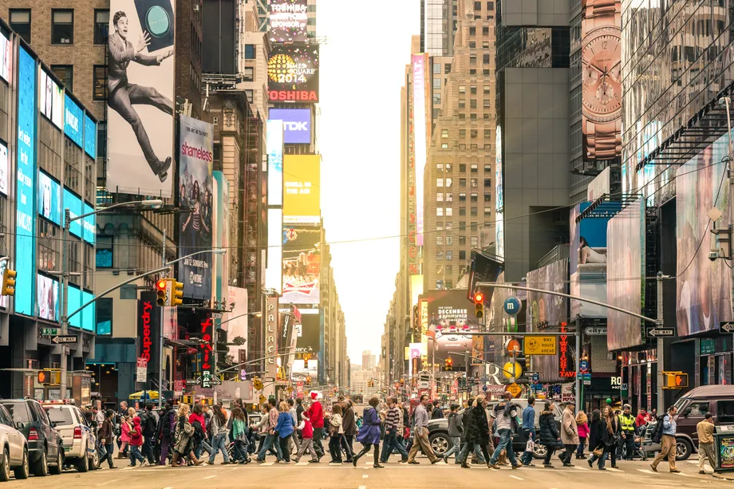
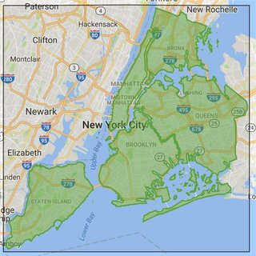
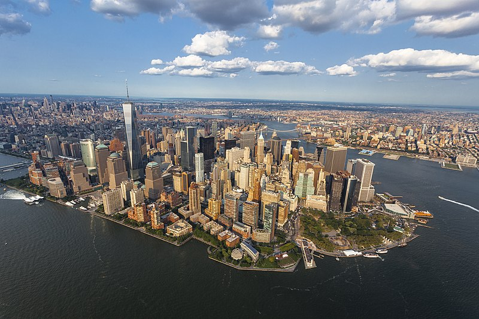

New York City's population is 8,097,282. The average income for a person in Albany is 30,843, comparatively, the average income for people in New York is $79,967.
The exact date is unknown but New York City was founded sometime in 1625.

New York City is located in the Metropolitan Region of New York. Situated near the mouth of the Hudson River in the southeast portion of New York state. Located on the northeast coast of the United States, New York City is both a city and a major trading port.
New York City is considered urban. Of all the urban considered areas in the US, New York City is the fourth most dense.
